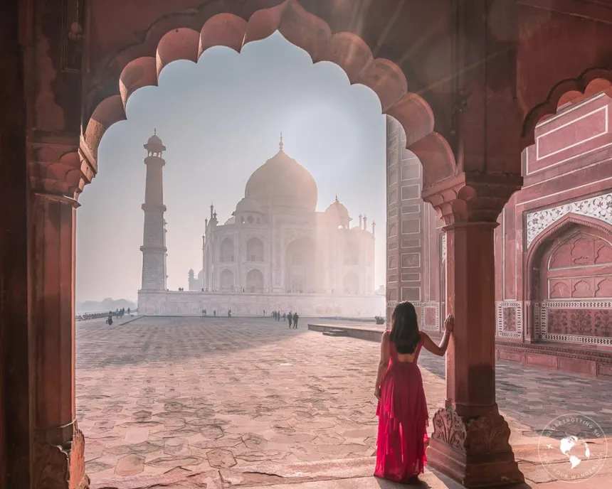
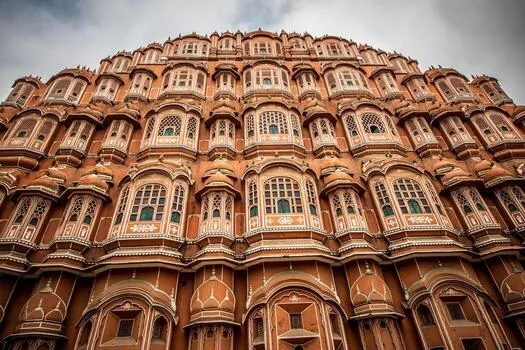
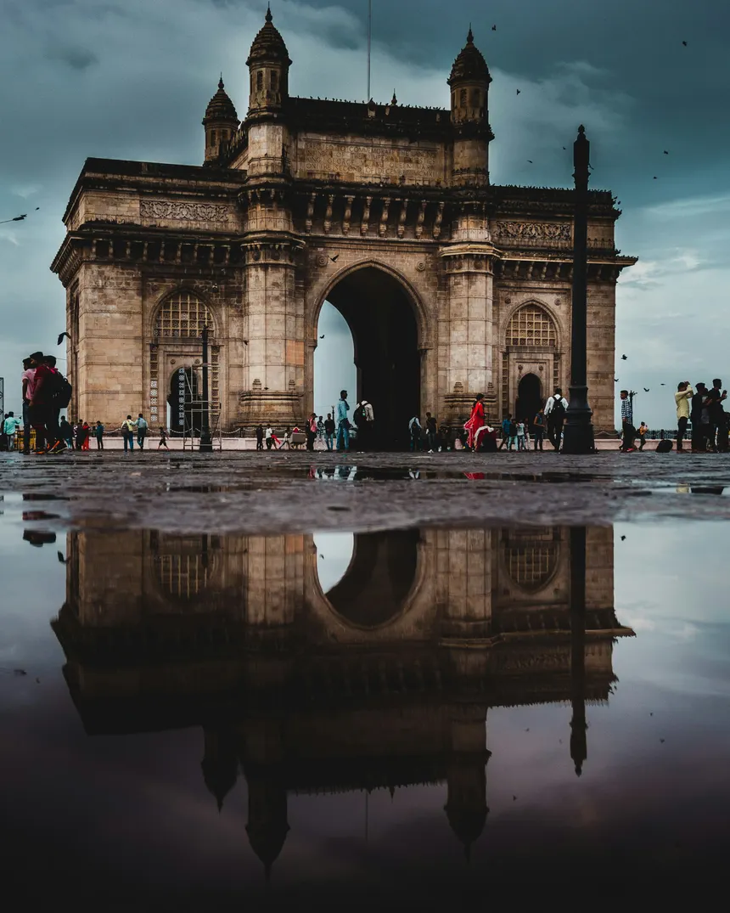
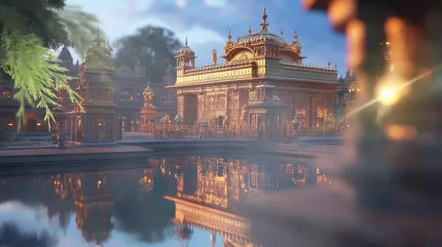
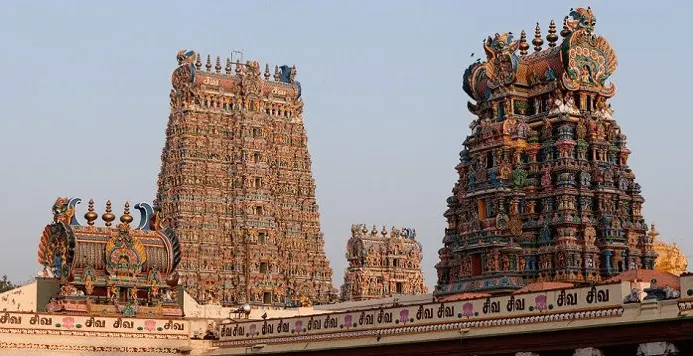

One of the Seven Wonders of the World, this stunning white marble mausoleum was built by Mughal Emperor Shah Jahan.

Known as the "Palace of Winds," this beautiful pink sandstone structure is renowned for its intricate lattice windows.

A grand monument built during the 20th century to commemorate the landing of King George V and Queen Mary at Apollo Bunder.

The holiest Gurdwara of Sikhism, famous for its stunning golden architecture and the serene Sarovar (pool) surrounding it.

An historic Hindu temple located on the southern bank of the Vaigai River, famous for its towering and colorful gopurams.
